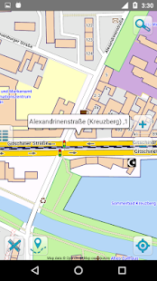

Smart Maps Offline is fast detailed offline maps of all countries of the world. Maps work everywhere, anytime. Internet connection isn’t required. Maps are impressively small. Save your phone’s memory.
Benefits of Smart Maps Offline:
- offline maps of any country
- your current location determined by GPS
- offline search on the map
- location sharing via sms, email, etc.
- support devices with high resolution screens
- details of the current GPS location
- maps work when no Internet connection is available.
- free map updates & Free POI database updates
Screenshots:
